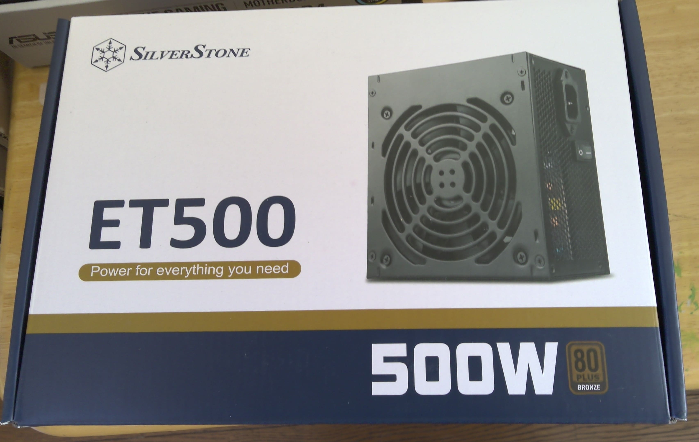

PC自作録 3.電源ユニット選定
SilverStone SST-ET500-B
前回はこちら
電源ユニット選定
i3 12100＆グラボ無しでの運用を考えて選定すると電源容量は大体400Wで足りるようだ。
今後i7 12700kとかグラフィックボードを積むと流石に足りなくなるだろうな・・・
というわけで選んだ電源はsilverStone SST-ET500-Bという500W ATX電源。
フラットケーブルで電源からケーブルを分離できないタイプの電源。このくらいの電源容量の電源だとモジュラーケーブル（着脱式）の製品は無いに等しかった。
まあそのうち700Wとかに買い替えるかもしれないのでそのへんは問題ない。

この商品についてのレビューがなかなか無い。というか見つからないので不安である。なんでやろな
Amazonにて購入時の価格は7980円。メモリより安い。
組み立て・取り付けは後々やるので今回はこれでおしまい。うーんこの
前回はこちら
 湯豆腐のかたまり──Assemble Yudofu
湯豆腐のかたまり──Assemble Yudofu